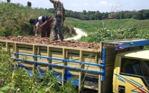
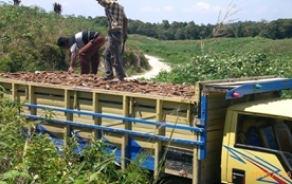

PT. HUTAHAEAN PABRIK TAPIOKA
Jl. Indorayon, Desa Pintubosi, Kec. Laguboti, Kab. Toba, SUMUT, 22381
Bahan Baku
Tanaman Singkong
Tanaman singkong / ubi kayu adalah tanaman yang buahnya berupa umbi dan buahnya ada di dalam tanah. Tanaman ubi kayu / singkong termasuk tanaman yang sangat rakus unsur hara. Buah / umbi menyerap air yang sangat tinggi tetapi tidak bisa bertahan di tempat / media tanam yang terlalu lembab (basah).

Pengenalan Ubi Kayu / Singkong (Manihot esculenta Crantz)
- a. Klasifikasi ubi/singkong :
-
- Kelas : Dicotyledoneae
- Sub kelas : Arhichamydeae
- Ordo : Euphorbiales
- Family : Euphorbiaceae
- Sub family : Manihotae
- Genus : Manihot
- Species : Manihot esculenta Crantz
- b. Sentar ubi/singkong :
-
- a. Lampung (24 %)
- b. Jawa Timur (20 %)
- c. Jawa Tengah (19 %)
- d. Jawa Barat (11%)
- e. Sumatera Utara (26%)
Kebutuhan Bahan Baku Pabrik
- Kapasitas pabrik 18 ton/jam x 14 jam dalam 1 hari kerja (2 shift. 1 shift 7 jam) = 252 ton/hari.
- Jika produksi 30 ton/ha, maka 252 / 30 = 8.4 ha kebun ubi yang harus dipanen setiap harinya.
- Kebutuhan bahan baku perbulan (25 hk x 252 ton = 6.300 ton ubi (6.300 ton/30 ton = 210 ha ubi kayu yang harus dipanen / bulan).
- Jadi, kebutuhan ubi kayu per tahun = 6.300 ton x 12 bulan = 75.600 ton/tahun atau sama dengan 2.520 ha lahan kebun (75.600 ton / 30 ton/ha).
Kebutuhan Lahan
1. Lokasi Pabrik & Pengolahan Limbah ± 20 hA.
2. Lokasi Kebun Ubi ± 2.600 hA.
3. Lokasi Perumahan Karyawan.
4. Area Penelitian & Pengembangan (riset).
Sumber Bahan Baku
1. Kebun Inti
2. Kebun Masyarakat
3. Kebun Plasma
Kebun PLASMA (POLA KERJASAMA DENGAN MASYARAKAT)
a. Penyediaan traktor untuk membajak lahan
b. Penyediaan Bibit
c. Penyediaan Pupuk
d. Penyediaan Pestisida, dll.

 

Persiapan Lahan
- Persiapan lahan bertujuan agar tanah menjadi gembur, terhindar/terjaga dari penggenangan air, mempermudah proses penanaman dan perawatan,
- pemberian pupuk kandang/kompos, dan pemberian kapur pertanian (dolomite).
- Lahan yang siap tanam harus diberi pupuk kadang/kompos, pemberian kapur pertanian (dolomite), pengolahan lahan (pembajakan), pembuat
- drainase air (bisa dengan system penggulutan tanah), dan melakukan pemupukan pada setiap lubang yang akan ditanam.
Penanaman
Cara penanaman bibit ubi adalah :
1. Jarak tanam mengikuti varietas dari bibit yang akan ditanam.
2. Kedalaman tanam tidak boleh terlalu dangkal (15-20 cm).
3. Posisi tanam harus tegak lurus.
4. Jika memungkinkan barisan penanaman mengikuti arah matahari (barat-timur).

Bibit Tanaman
Bibit yang akan ditanam dilakukan pemilihan batang yang sudah tua.
Ukuran pemotongan batang bibit berkisar 25-30 cm.
Selanjutnya dilakukan penggoresan sekitar pangkal batang (di bawah mata batang).